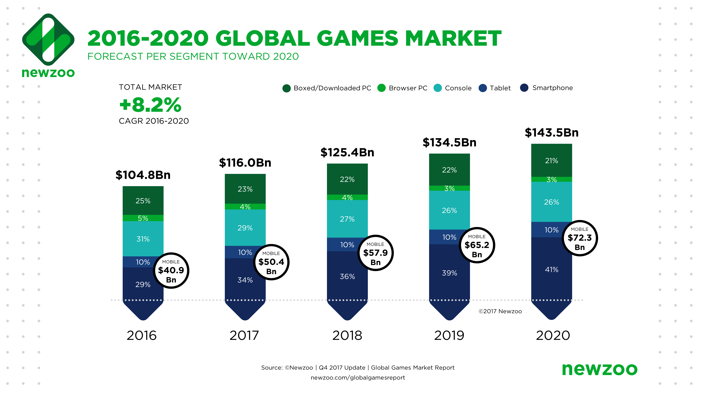

The video game industry is growing rapidly and continues to create a healthy
economic environment as time goes on. The graphic below displays estimates for a steady growth
of sales for video games on all platforms from 2016-2020.

Newzoo Estimates for Games Industry Sales; Image by Newzoo
Video Games naturally bring in a considerable amount of money for the developers
that create them, if they succeed. The current MSRP for new big budget games is $60, but smaller budget titles might sell
for $20, or even less upon release. Video Games are very expensive to make, so it is important that a game being sold for profit
makes strong sales in order for a developer studio to continue working on more projects. There are many cases where game developer
studios have to shutdown entirely because some of their games end up failing.
The average cost for creating a video game back in 1996 was just short of $1 million,
but certain games in the past decade have put companies into the hundred million dollar range.
For example, Grand Theft Auto V had a staggering $265 million budget! Of course, the scope
and size of a game can fluctuate the cost of a game dramatically. The cost depends on things like
whether or not the game utilizes 3D graphics or 2D graphics, voice acting, and complex gameplay
mechanics. A video game that has a simple 2D artstyle would cost a lot less to make due to there
being less effort required to complete a smaller project.
The table below shows some of the best selling
games of all time...